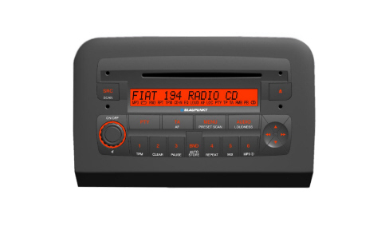
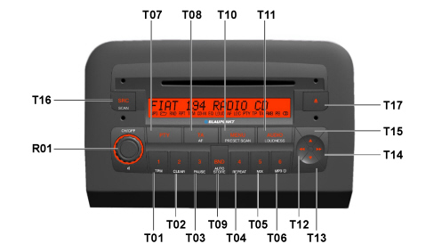
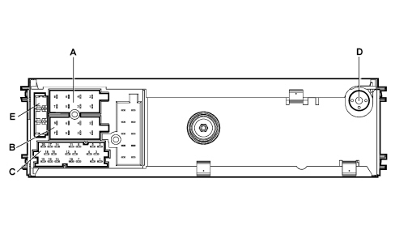
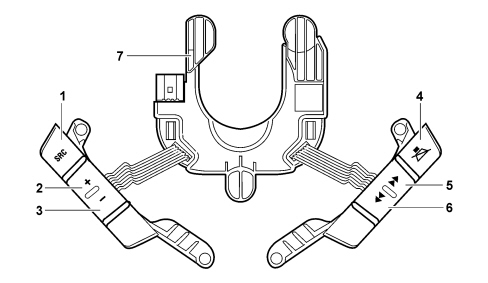
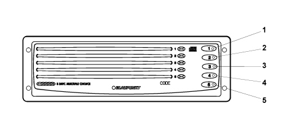
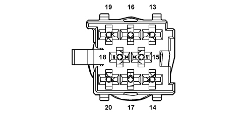
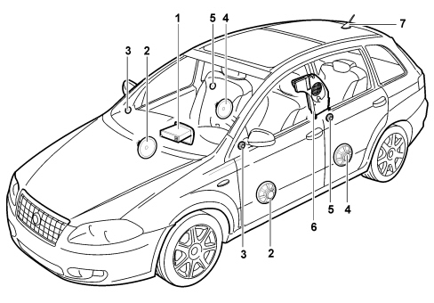
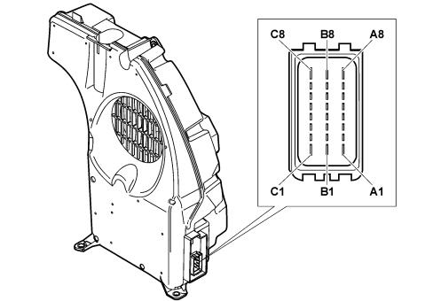

INTRODUCTION - ACCESSORIES
- Path
- Descriptions > 55 ELECTRICAL EQUIPMENT > 5570 ACCESSORIES > INTRODUCTION - ACCESSORIES
- Kind
- system description
- Applies to
- all engines; all production periods
- Interactive page
- https://sloeber94.github.io/elrnDB-fCrm/en/#/194001961
Applies to: all engines; all production periods
INTRODUCTION
The vehicle is equipped with a radio system available in different trim levels:
- radio preparation;
- radio with CD player, CD/MP3, with LCD and outside CD Changer managment (if fitted);
- CONNECT NAV+ built-in radio-telephone-navigator.
For further details relating to the Connect Nav+,
See descriptions 5580P CONNECT PANEL
A sophisticated Bose HIFI system with special HIFI speakers and an outside amplifier described later on can also be fitted.
The radio is a CAN node through which information is exchanged with the Body Computer and with the other electronic units.
Radio preparation
The vehicle can be fitted, on request, with a simple AFTERMARKET preparation.
Radio preparation pin out
Connector A/B (16-way)
PIN | FUNCTION |
|---|---|
A1 | n.c. |
A2 | n.c. |
A3 | n.c. |
A4 | +30 Supply |
A5 | Electric aerial power supply |
A6 | + side lights for lighting |
A7 | +15 Supply |
A8 | Earth |
B1 | + Right rear speaker |
B2 | - Right rear speaker |
B3 | + Right front speaker |
B4 | - Right front speaker |
B5 | + Left front speaker |
B6 | - Left front speaker |
B7 | + Left rear speaker |
B8 | - Left rear speaker |
The radio installed in the AFTERMARKET is not a CAN node.
The vehicle is equipped with preparation comprising:
- front speakers (mid woofers located in the doors and tweeters positioned in the exterior rear view mirror triangle);
- (full-range) rear speakers located in the rear doors;
- cables connecting the radio with the speakers;
- aerial with support mounted at the rear of the roof, coaxial cable and supply lead for aerial amplifier.
Radio
Aesthetic features:
Dimensions Silver Box 1 DIN and aesthetic trim 2 DIN.
There are two versions: Radio CD and Radio CD/MP3, both with front panel with lacquered buttons.

Functional specifications:
- Music audio power: 4x30W
- 7 band graphic equalizer
- 2IC digital tuner with SHARX function
- Large dimension integrated alphanumerical display (20 characters for RDS functions + control flags)
- Easy to manage menu for the adjustment of the radio settings and any external interfaces (CD-Changer, telephone)
- Mute function by pressing the volume knob briefly
- Soft Mute during radio source/station changing operations
- Adjustment of volume dependent on vehicle speed (can be selected using the menu)
- Adjustment of radio switching off timer (immediate or 20 minutes after key off)
- Phantom-Power aerial power supply
- Remote control from the steering wheel
- Possibility of interface with external Blaupunkt CD-Changer via ASCI-BUS line.
- Possibility of connecting mobile phone hands-free kit
- Active control of hi-fi system (where fitted)
Possible audio sources include standard sources (radio tuner, CD audio/MP3 and CD Changer) whose specifications are detailed in the rest of the chapter.
PTY31 alarms (program type) and Traffic Announcements, sources linked to other modules such as the telephone, telephone ringing, voice recognition and voice synthesis for navigation are treated as separate functions.
All versions are prepared for connection with the low speed CAN interfance (B-CAN) to allow dialogue with other system nodes. The following are also transferred via this interface:
- Anti-theft code;
- On control (for switching off logic);
- Speed dependent volume;
- Lighting control;
- Remote controls from the steering wheel, where fitted;
- Repetition of radio information in Control Panel.
Radio specifications (Radio CD and Radio CD/MP3):
- High selectivity digigal tuner with digital selection function with dynamically variable band width.
- FM multipath detector.
- Possibility of selecting HICUT functions (treble dynamic reduction on the basis of the RF signal)
- Autostore (automatic memorizing of radio stations with best signal)
- RDS (radio data system) with EON, AF (alternative frequencies), TA, TP, PTY and REG function (can be selected by the user)
- TA (Traffic Announcements)
- Automatic PTY search
- Automatic TP search (traffic program)
- Manual and automatic search for stations
Possibility of Local Distance adjustment for automatic frequency search
The following can be memorized:
-18 FM stations (6 of which can be memorized through autostore);
- 6 MW stations
- 6 LW stations
- 6 stations for PTY programme types (FM only)
There are also two scan modes (brief listening to a station and automatic transfer to the next)
- Scanning the frequency band used
- Scanning programmed stations
CD player specifications:
- Motorized loading and ejection
- Pause
- Select previous/next track
- FF/F-REW
- TPM function (Track Program Memory) for 30 CDs with 40 tracks each
- Track scanning function
- Mix function
- Track repeat function
- CD Naming (8 characters for 30 CDs)
- CD display (display of name of disc/track time elapsed)
- Reading audio CDs, CD-R and CD-RW
MP3 CD specifications:
- Motorized loading and ejection
- MP3-Info function (ID3-TAG)
- Directory up / down selection
- Track up / down selection
- Pause
- FF/F-REW
- Track scanning function
- Mix function (random reproduction of tracks in a folder/in the entire disc)
- Repeat function (for a single track or a single folder)
- MP3 Display (folder, ID3-TAG information, track time elapsed, name of the file)
- Reading audio or data CDs, CD-R and CD-RW
Audio specifications:
- Bass
- Treble
- Balance
- Fader
- Loudness
- 7 band equalizer
- Preset (factory equalizer)
- Rock
- Jazz
- Classic
- User (personalized user equalizer)
- Audio input for Blaupunkt CD-CHANGER
Telephone section specifications:
- Telephone mute function on/off
- Telephone volume function (telephone volume adjustment using volume knob)
- Telephone wake up function
FRONT PANEL
The main button (R01) may have a dual function depending on how long it is pressed for:
- Brief press (< 2 secs.) with radio on: Mute On / Off
- Long press (> 2 secs.) with radio on: radio switched off
The volume is increased/decreased by one unit by turning it to the right/left.
Keys

Keys | Short press (< 2 secs.) | Long press (> 2 secs.) | ||
|---|---|---|---|---|
T11 | Move to Bass, Treble, Balance, Fader | Loudness On/Off | ||
T17 | CD ejection | CD ejection | ||
T16 | Audio source change: tuner, CD, CDC (if fitted),... | Radio | FM / AM – Scan | |
CD | CD – Scan | |||
CDC (opt) | CDC – Scan | |||
T09 | Radio only | Move to FM1, FM2, FMT, MW, LW, FM1, ... | Radio, CD, CDC Start FMT autostore | |
T01 - T06 | Radio | Stations preselected | Radio | Memorizing stations |
Cd / CDC | 1 – TPM on / off (CD-mode only) Cd / CDC | Cd / CDC | 1 – TPM store (CD-CDC only) | |
2 – No action | 2 – TPM clear (CD-CDC only) | |||
3 – Pause on / off | 3 – Pause on / off | |||
4 – Repeat on / off | 4 – Repeat on / off | |||
5 – MIX on / off | 5 – MIX on / off | |||
6 - Info function (CD MP3 mode only) | 6 - Info function (CD MP3 mode only) | |||
T08 | TA On/Off | AF On/Off | ||
T07 | PTY On/Off | Radio | Shows the type of PTY programme | |
T10 | Enter / exit menu | Radio | Preselected scan | |
Cross button
Keys | Mode | Short press (< 2 secs.) | Long press (> 2 secs.) |
|---|---|---|---|
T15 | Radio: | Automatic forward search | Continue automatic forward search |
- with TA | TP stations automatic forward search | Continue TP stations automatic forward search | |
- without AF | Automatic forward search | Continue automatic forward search | |
- with PTY | PTY automatic forward search | Continue PTY automatic forward search | |
Audio CD: | - | - | |
CD MP3 | Forward folder selection | Continue forward folder selection | |
CDC | Forward CD selection | Continue forward CD selection | |
T13 | Radio: | Automatic backward search | Continue automatic backward search |
- with TA | TP stations automatic backward search | Continue TP stations automatic backward search | |
- with AF | Automatic backward search | Continue automatic backward search | |
- with PTY | PTY automatic backward search | Continue PTY automatic backward search | |
Audio CD | - | - | |
CD MP3 | Previous track selection | Continue previous track selection | |
CDC | Previous CD selection | Continue previous CD selection | |
T14 | Radio | Manual forward search | Manual fast forward search |
Audio CD | Skip to next track | Fast forward track | |
CD MP3 | |||
CDC | |||
T12 | Radio | Manual backward search | Fast manual backward search |
Audio CD | Start again / skip to previous track | Fast backward through track | |
CD MP3 | |||
CDC |
Display and lighting
It is a positive TN technology display (transreflective lighting), scratch-resistant, with 20 characters with 5x7 pixel segments.
It displays the following information:
- Fixed symbols for: MP3, MP3 folder, RND, RPT, TPM, CD-IN, EQ, LOUD, AF, LOC, PTY, TP, TA, radio band selected, preset selection, stereo.
- Frequency, name of the programme, graphics, ...
In daytime lighting conditions, the maximum brightness is activated whilst in nightime lighting conditions, the lighting depends on a signal that varies in a linear manner.
GENERAL FUNCTIONS
Switching on/off
The system receives a power supply when the ON button (R01) is pressed for more than 20 ms. The display (indicating the last source selected) responds immediately (in 1 sec.) and the audio can be heard in around 2.5 secs.
Press the ON button again for more than 2 seconds to switch the system off.
Automatic switching off not ignition-dependent: immediately or after 20 minutes (can be set using the menu). The radio can be switched on again for a futher 20 minutes after it has been switched off.
Last switching off state
After the radio has been switched on / off, it continues with the same settings present at the last key off with some exceptions.
For example, if the level of the volume when it was switched off was higher than 30, the system starts again with a volume of 30.
CD ejection
Pressing the "Eject" button (T17) ejects the disc and re-enables the source activated prior to the CD (only if the radio is on).
If the CD is not removed from the slot, the equipment reloads it after 20 seconds, remaining in radio mode.
If the user tries to reinsert a CD that has been ejected before extracting it fully from the slot, the equipment will remain in radio mode.
Traffic information
The traffic information function is activated/deactivated by pressing the AF/TA button briefly.
The display at the side shows the following:
- "TP" if the radio station broadcasts traffic news
- "TA" if the traffic information function is activated
If the traffic information function is activated, but the radio station tuned into is not broadcasting any information, a warning beep is given out every 30 seconds.
If the radio is in AM mode, by pressing AF/TA briefly (< 2 secs.) the radio mode changes to FM1 on the station last selected. If the latter is not sending traffic information, the automatic tuning into an enabled station starts.
PTY31
The PTY31 processing (emergency messages) is similar to the traffic announcements, but without the possibility of switching it off and recalling another preselection button.
If a PTY31 message is being transmitted, the display will show: “A L A R M”.
Automatic store (AUTOSTORE)
By pressing the Band button (T09) for a while (2 secs. with a confirmation beep) the Autostore function is activated. This function memorizes the 6 most powerful FM radio stations in decreasing order of intensity on the FMT band. If the traffic information function is activated, only those stations broadcasing this information are memorized.
Menu
The menu functions are activated by pressing the MENU button (T10) briefly.
The display shows: “M E N U”.
After 2 seconds the display shows: “E Q P R E S E T : X X X X”.
Pressing the Up / Down button (T15/T13) changes the menu function selected.
The following functions are available:
- Equalizer on /off
- User equalizer setting (only if USER EQUALIZER is selected)
- Regional function on/off
- Settings for audio CD display (onlyif audio CD mode is activated)
- Settings for audio CD MP3 display (onlyif audio CD MP3 mode is activated)
- Settings for CDC display (only if a CD changer is connected and the CDC mode is activated)
- Radio sensitivity setting
- Speed volume control on/off
- Giving an audio CD a name (only if the CD/CDC mode is activated)
- Telephone settings
- Hi-Cut on / off
- Selection of switching off time at key off
Anti-theft code
The code is the following type: 4 digits from "1111" to "6666".
The radio code is stamped on the card handed over to the customer together with the vehicle.
Procedure for entering the code
When the radio is switched on, if there is a code request, the LCD will show:
“C O D E” for 2 secs. and aftewards: “- - - -“.
The first digit is selected by pressing the corresponding key for the radio station (1-6); the subsequent digits from 2 to 4 are selected in the same way.
If the code is not entered within 20 seconds, the display will show "CODE" for 2 seconds and then "----". This failure to respond in the maximum time is not considered as a failure to record the code.
After having entered the fourth digit correctly, the radio will start to work.
If an incorrect code is entered, the radio will beep and the following information will appear on the display: “C O D E” for 2 secs. and aftewards: "- - - -" allowing the user to enter another code.
Once the user enters an incorrect code, the waiting time increases (1 min, 2 min, 4 min, 8 min, 16 min, 30 min, 1h, 2h, 4h, 8h, 16h, 24h) to a maximum of 24h., shown on the display by: “RADIO BLOCKED / WAIT”. Later on, the procedure for entering the code starts again.
Factory settings
Bass = 0
Treble = 0
Balance = 0
Fader = 0
Loudness = off
Source = Radio, FM1, Preset 1
Volume = 30
Sensitivity = Distance
Equalizer = 0dB for all user equalizer bands
Regional function = REG off
Traffic = TA off
SVC = on
FM I preselections = all at 87.7 MHz
FM II preselections = all at 87.7 MHz
FM T preselections = all at 87.7 MHz
MW preselections = all at 531 kHz
LW preselections = all at 153 kHz
PTY preselections = 1 - NEWS
2 – POP M
3 – EASY M
4 – LIGHT M
5 – CULTURE
6 – AFFAIRS
CD audio display = Time elapsed
CD MP3 display = MP3 info
Display for CDC = Time elapsed
Telephone setting = 47
High cut = off
REAR VIEW OF RADIO

A - Power supply connector (connector A, 8-way)
B - Speaker output connector (connector B, 8-way)
C -Auxiliary functions connector (connectors C/D/E 6+6+8 way)
D - Aerial connector
E - 10A fuse
Connector A/B pin out (8+8 way)
PIN | FUNCTION |
|---|---|
A1 | B-CAN B (CAN-H) |
A2 | Positive signal (with HI-FI amplifier) |
A3 | B-CAN A (CAN-L) |
A4 | +30 Supply |
A5 | n.c. |
A6 | n.c. |
A7 | n.c. |
A8 | Earth |
B1 | + Right rear speaker |
B2 | - Right rear speaker |
B3 | + Right front speaker |
B4 | - Right front speaker |
B5 | + Left front speaker |
B6 | - Left front speaker |
B7 | + Left rear speaker |
B8 | - Left rear speaker |
Connector C/D/E pin out (6+6+8 way)
PIN | FUNCTION |
|---|---|
1 | n.c. |
2 | n.c. |
3 | n.c. |
4 | n.c. |
5 | n.c. |
6 | Positive signal for outside audio amplifier enablement |
7 | Tel audio IN (+) |
8 | Tel audio IN (-) |
9 | Tel mute |
10 | n.c. |
11 | n.c. |
12 | Earth for analogue signals (telephone preparation) |
13 | CDC DATA IN |
14 | CDC DATA OUT |
15 | +30 CDC |
16 | Positive signal for CDC power supply enablement |
17 | CDC DATA GND |
18 | Audio ref. CDC |
19 | Audio left CDC |
20 | Audio right CDC |
Radio controls on the steering wheel (where fitted)
View of audio controls on steering wheel.

Steering wheel with 6 buttons:
1 - SCR, switching FM1 / FM2 / FMT / MW / LW / CD / …;
2 - VOL +, volume increase;
3 - VOL -, volume decrease;
4 - MUTE;
5 - Change preset / change track (foward);
6 - Change preset / change track (backward);
7 - Steering Wheel Node (NVO).
Blaupunkt cd changer specifications (5 discs)
- Motorized loading and ejection
- CD selection (up / down)
- Track selection (up / down)
- Pause
- FF/F-REW
- Scan function
- Track repeat function
- CD repeat function
- Mix function (CD – magazine)
- TPM function (Track Program Memory)
- CD Naming (8 characters for 30 CDs)

Button | Short button press | Long button press |
|---|---|---|
1 | Selection and listening to disc 1 | Ejection of disc 1 |
2 | Selection and listening to disc 2 | Ejection of disc 2 |
3 | Selection and listening to disc 3 | Ejection of disc 3 |
4 | Selection and listening to disc 4 | Ejection of disc 4 |
5 | Selection and listening to disc 5 | Ejection of disc 5 |
Cd-changer connector

Pin | Function | Input/Output |
|---|---|---|
13 | CDC DATA IN | I / U |
14 | CDC DATA OUT | I / U |
15 | +30 CDC | I / U |
16 | Positive signal for CDC power supply enablement | |
17 | CDC DATA GND | |
18 | Audio ref. CDC | I / U |
19 | Audio left CDC | I / U |
20 | Audio right CDC | I / U |
ACOUSTIC SYSTEM
A HIFI system with special speakers and an outside amplifier is available on request.
The system has been developed ad hoc for the FIAT CROMA: the acoustic properties of the passenger compartment have been carefully designed so that the amplifier and the speakers are perfectly in keeping with the passenger compartment offering optimum listening properties.
The system is also in perfect harmony with the aesthetics of the vehicle without taking up additional space.
The system has a dedicated wiring interface with the various vehicle wiring (dashboard, rear). It is therefore not advisable to make any changes to the original system (e.g. graphic equalizers, additional sub-woofers, extra amplifiers).
In addition, the system components (amplifier and speakers) should not be repaired individually, but should be replaced with new components.
There are two distinct types of acoustic system for the vehicle:
- Standard
- Hi-Fi sound system
Composition
The location of the components is illustrated below.

1 - Radio
2 - Front door speakers
3 - Tweeter front speakers
4 - Rear door speakers
5 - Tweeter rear speakers
6 - Rear subwoofer speaker with built in amplifier
7 - Aerial
Standard system general specifications
The system is composed of 6 speakers, divided into the following types:
- 165 mm diameter, 40W mid woofer speakers, located in the lower part of the front doors, designed for the reproduction of medium-low frequencies. The technology used for these components (water resistant) means that they do not suffer damage from any sprays of water inside the door.
- Tweeter speakers, 40W, located in the exterior rear view mirror triangles, designed for the reproduction of high frequencies.
- Full-range 165 mm diameter, 40W speakers, located in the bottom part of the rear doors, capable of reproducing a range of frequencies from medium-low to medium-high. Water resistant technology has be used for these components too.
General specifications of hi-fi sound system
The system is composed of 8 speakers and a sub woofer box containing a five channel power amplifier.
The main features of the components are as follows:
- 165 mm diameter, 40W mid woofer speakers, located in the lower part of the front doors, designed for the improved reproduction of medium-low frequencies. Water resistant technology has be used for these components too.
- Tweeter speakers, 40W, located in the exterior rear view mirror triangles, designed for the reproduction of high frequencies.
- 165 mm diameter, 40W mid woofer speakers, located in the lower part of the rear doors, designed for the improved reproduction of medium-low frequencies. Water resistant technology has be used for these components too.
- Tweeter speakers, 40W, located in the top part of the rear doors, designed for the reproduction of high frequencies.
- Bass-reflex type sub woofer box, 12 litre volume, containing a speaker 165 mm in diameter, 100W, for the reproduction of low frequencies. This box is located in the boot, on the side of the right wheel arch. The five channel audio power amplifier is located inside the sub woofer box for the operation of the actual sub woofer.
The view of the sub woofer is illustrated below.

Pin out
Pin | Function |
|---|---|
A1 | n.c. |
A2 | Left rear door audio output (+) |
A3 | Left rear door audio output (-) |
A4 | Right front door audio output (+) |
A5 | Right front door audio output (-) |
A6 | Left front door audio output (+) |
A7 | Left front door audio output (-) |
A8 | n.c. |
B1 | n.c. |
B2 | Right rear door audio output (+) |
B3 | Right rear door audio output (-) |
B4 | Right rear door audio input (-) |
B5 | Left rear door audio input (-) |
B6 | Right front door audio input (-) |
B7 | Left front door audio input (-) |
B8 | n.c. |
C1 | Earth |
C2 | Enablement from radio |
C3 | Status recognition |
C4 | Right rear door audio input (+) |
C5 | Left rear door audio input (+) |
C6 | Right front door audio input (+) |
C7 | Left front door audio input (+) |
C8 | +30 battery power supply |